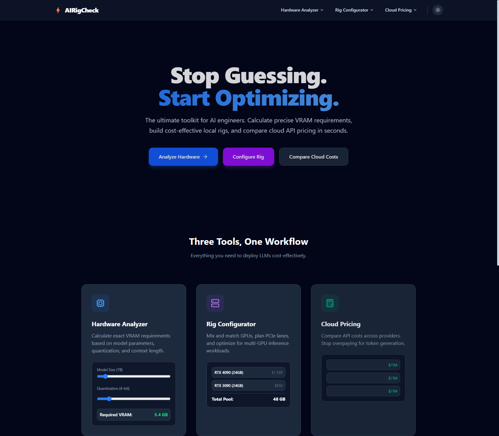

Problem statement
Sizing hardware for LLM inference is full of guesswork: model size, quantization and context length all change VRAM requirements non-linearly, and once you know the requirement you still have to decide between buying GPUs or renting cloud API capacity. I built AiRigCheck to turn that guesswork into three fast, concrete calculators.
What it does
- Hardware Analyzer. Calculates exact VRAM requirements from model parameters, quantization level and context length.
- Rig Configurator. Mixes and matches GPUs, plans PCIe lane allocation, and pools VRAM across cards for multi-GPU inference workloads.
- Cloud Pricing. Compares per-million-token API costs across providers so you are not overpaying for token generation.

Product & technical decisions
- One workflow, three tools. Instead of three disconnected calculators, I designed a shared visual language (sliders, live totals, comparison rows) so switching tools does not feel like switching products.
- Client-side calculation. VRAM and pricing math run entirely in the browser for instant feedback — no server round-trip while a user is dragging a slider.
- Static deployment. Shipping as a static site on Cloudflare Pages keeps the tool fast, cheap to host, and simple to keep available.
Results
Live in production
gpurunner-frontend.pages.dev:
three working calculators, not a mock.
0 → 1
Idea to a deployed product URL, scoped, built and shipped solo.
3 tools
Hardware analysis, rig configuration and cloud pricing in one consistent workflow.